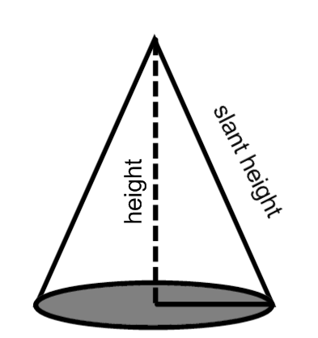
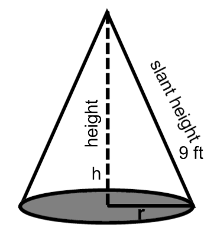

We introduce
the variables \(V\), for the volume, \(r\) for the radius and \(h\) for the height of the
cone.
The given rate is \(\frac {dh}{dt}=-0.5\) ft/s;
the rate to be determined is \(\left [\frac {dV}{dt}\right ]_{h=6}\).
We label the picture.

The equation relating all relevant variables is
\[ V=\dfrac {1}{3} \pi r^2\cdot h \]
Before we differentiate, we will express \(r^2\) in terms of \(h\).
\[ r^2=81-h^2 \]
and we substitute this into the equation above
\[ V=\dfrac {1}{3} \pi (81-h^2)\cdot h \]
Then we simplify it.
\[ V=\dfrac {1}{3}\pi (81h-h^3) \]
Now, we differentiate with respect to \(t\).
\[ \frac {dV}{dt}=\dfrac {\pi }{3}(81-3h^2) \cdot \frac {dh}{dt} \]
Now, we evaluate. \begin{align*} \eval {\frac {dV}{dt}}_{h=6}&=\frac {\pi }{3}(81- 3(6)^2)(-0.5)\\ \eval {\frac {dV}{dt}}_{h=6}&=\frac {\pi }{3}(-27)(-0.5)\\ \eval {\frac {dV}{dt}}_{h=6}&=4.5 \pi \text { f$t^3$/s} \end{align*}